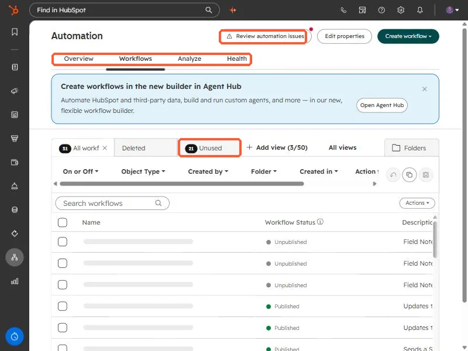
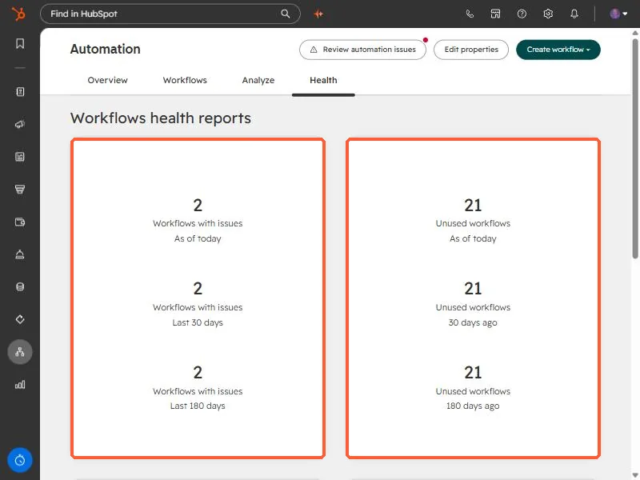

Short answer
Open Automation and click the Health tab. It shows two reports: Workflows with issues and Unused workflows, each as of today, 30 days ago, and 180 days ago. The Workflows tab also has an Unused view, and the Review automation issues button opens the list of failed actions. In my demo portal 21 of 31 workflows are unused.
1. The Workflows tab
Open Workflows. Along the top are Overview, Workflows, Analyze, and Health, and a Review automation issues button. The view tabs below include All workflows, Deleted, and Unused, each with a count.


The Unused view is a ready-made list of workflows nobody has used, so it is the place to start a cleanup. In this demo portal it holds 21 of 31.
2. The Health tab
The Health tab turns that into a trend. Two cards report Workflows with issues and Unused workflows as of today, 30 days ago, and 180 days ago, so you can see whether things are getting better or worse.


3. Review automation issues
The button opens a list of issues. It has a Needs review tab and an Already reviewed tab, and for each issue it shows where it occurred, how many automations it affected, the last occurrence, and a priority. An issue leaves the Needs review list once you have reviewed all the automations it affected. The issues in my demo include a failed action and an action that was sunset.
4. A short cleanup routine
- Open the Unused view and sort by last updated.
- Check whether each one is really unused before you delete it. HubSpot also keeps a Deleted view.
- Work through Needs review and fix the high priority issues first.